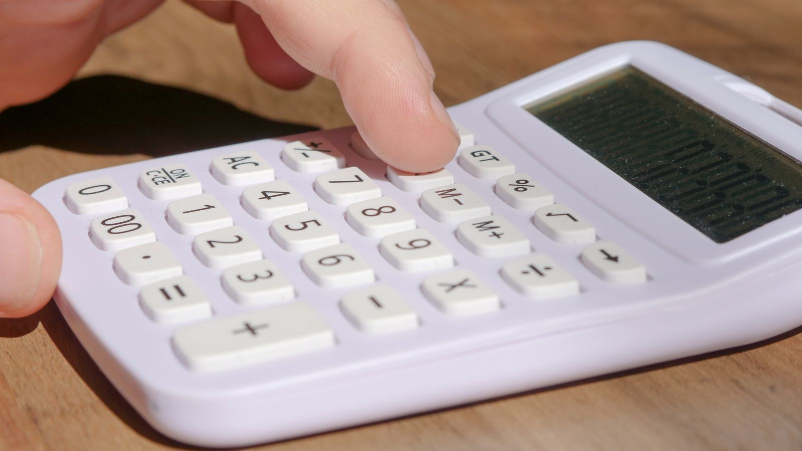
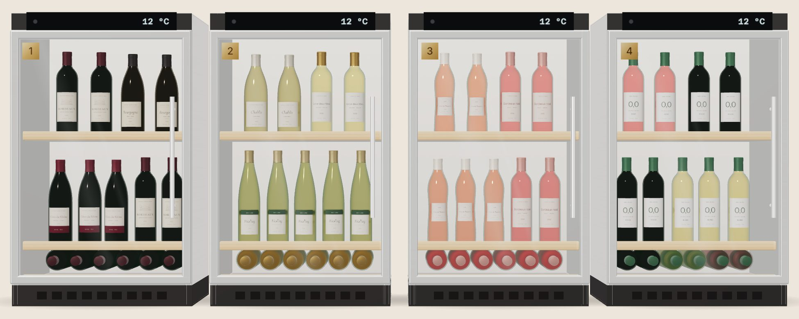

Ce qu'il reste à prouver.
Avec les données disponibles, la rentabilité du casier ne peut être ni démontrée ni exclue. Tout tient à une question : combien de bouteilles faut-il vendre chaque mois pour payer le casier ?

Combien de bouteilles faut-il vendre ?
Réglez le prix, la marge et les coûts : le simulateur calcule le nombre de bouteilles à vendre chaque mois pour payer le casier. Chaque réglage est expliqué en une ligne.
Trois réglages tout prêts, du plus défavorable au plus favorable ; « Notre cas » est celui que nous jugeons le plus probable. Vous pouvez ensuite tout modifier.
Ce que paie le client, TVA de 20 % comprise.S110 Repères : 11 € pour un rosé, 19 € pour un rouge chez un caviste.S108
Ce qui nous reste sur le prix hors TVA, une fois le vin payé au domaine. Repère : 40 % dans le réseau Nicolas.S86
Tout le reste : loyer ou commission de l'hôte, électricité, logiciel, assurance, entretien hypothèse
Une bouteille dessinée = une bouteille vendue par jour.
- Par jour
- 3,3 bouteilles
- Remplissages d'un casier de 42 bouteillesS10
- 2,3 par mois
- Ventes à réaliser
- 1 470 € TTC par mois
Aucun casier ne publie ses ventes, pas même Cave O Vin : le volume reste la grande inconnue du projet.
- 1
Ce qui reste sur une bouteille
- 2
Les coûts du mois
238 € de casier + 250 € d'autres coûts = 488 €
- 3
Les bouteilles à vendre
488 € ÷ 5,00 € de marge = 98 bouteilles
Sans salaire, les réglages tout prêts demandent de 48 à 619 bouteilles par mois : c'est d'abord le coût du casier qui fait varier le résultat. Son prix d'achat vient de casiers réfrigérés pour fruits et légumes : c'est une analogie.
Un casier à Bordeaux, sa première année
Notre cas : un casier acheté, des bouteilles à 15 €, 40 % de marge et 250 € de frais par mois. Seul le nombre de bouteilles vendues change d'une colonne à l'autre : c'est la donnée qu'aucune source ne publie.
| Poste | Volume faible | Volume moyen | Volume fort |
|---|---|---|---|
| Bouteilles vendues par mois hypothèse | 150 | 300 | 450 |
| Chiffre d'affaires TTC, à 15 € la bouteilleS108 | 27 000 € | 54 000 € | 81 000 € |
| Chiffre d'affaires hors TVAS110 | 22 500 € | 45 000 € | 67 500 € |
| Achat du vin aux domaines (60 % du prix hors TVA) | −13 500 € | −27 000 € | −40 500 € |
| Marge brute (40 %)S86 | 9 000 € | 18 000 € | 27 000 € |
| Casier acheté 20 000 €, réparti sur 7 ansS81 | −2 857 € | −2 857 € | −2 857 € |
| Autres frais, 250 € par mois hypothèse | −3 000 € | −3 000 € | −3 000 € |
| Résultat avant salaire | 3 143 € | 12 143 € | 21 143 € |
| Un salaire à temps plein, Smic brut de 1 867 € par moisS121 | −22 404 € | −22 404 € | −22 404 € |
| Résultat après salaire | −19 261 € | −10 261 € | −1 261 € |
Hors impôts, cotisations patronales, frais de paiement en ligne, droits d'accise et installation du casier. Les volumes sont des hypothèses : un test de quatre semaines, avec retrait au comptoir d'un commerçant partenaire, permettrait de les mesurer avant d'acheter.
Dans notre cas, un casier acheté couvre ses coûts dès 98 bouteilles par mois, mais un seul casier ne paie pas un salaire à temps plein : il lui faudrait 471 bouteilles. Le concept ne sera rentable qu'en réseau, à partir de deux casiers vendant chacun 300 bouteilles par mois : c'est ce réseau qu'il faudra financer, une fois la demande mesurée.
Rouvrir un casier, ou vérifier nos sources
Les 54 sourcesCliquez sur une cave pour revenir à son chapitre.
